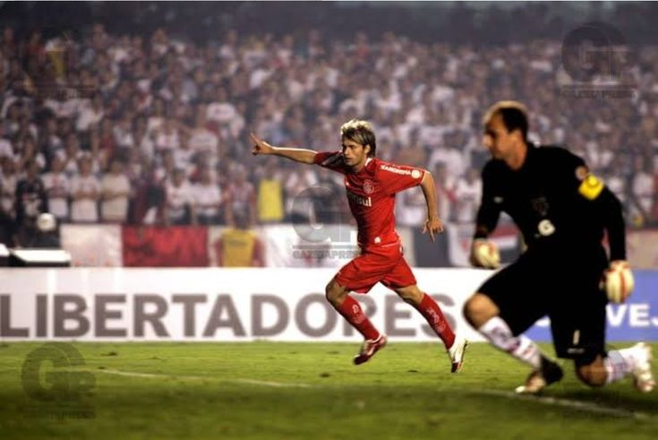
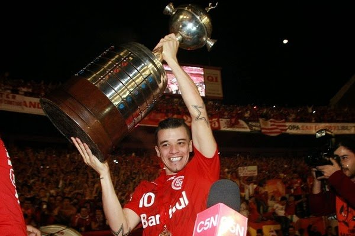

As duas conquistas continentais que colocaram o Internacional entre os gigantes da América
O Sport Club Internacional conquistou a Copa Libertadores da América em duas oportunidades, nos anos de 2006 e 2010. Os títulos marcaram uma das fases mais vitoriosas da história do clube e transformaram o Colorado em uma das grandes potências do futebol sul-americano.
🏆 Libertadores da América de 2006
A primeira Libertadores da história colorada foi conquistada em 2006. Após uma campanha consistente, o Internacional chegou à final para enfrentar o São Paulo, então campeão mundial e considerado uma das equipes mais fortes do continente. No jogo de ida, disputado no Morumbi, o Colorado venceu por 2 a 1, com dois gols de Rafael Sobis.

Na partida de volta, diante de um Beira-Rio completamente lotado, o empate por 2 a 2 garantiu o primeiro título continental da história do clube. Jogadores como Fernandão, Tinga, Iarley e Rafael Sobis foram fundamentais para uma conquista que mudou definitivamente a história do Internacional.
🏆 Libertadores da América de 2010
Quatro anos depois, o Internacional voltou ao topo da América. Em 2010, a equipe comandada por Celso Roth realizou mais uma grande campanha e chegou à final contra o Chivas Guadalajara, do México. O primeiro confronto terminou com vitória colorada por 2 a 1 fora de casa, colocando o clube em excelente situação para a decisão.

No jogo decisivo, realizado no Beira-Rio, o Internacional venceu novamente por 3 a 2 e conquistou seu segundo título da Libertadores. Nomes como Andrés D'Alessandro, Giuliano, Kleber, Bolívar e Leandro Damião marcaram seus nomes na história do clube e ajudaram a consolidar o Colorado entre os maiores campeões do continente.
Com as conquistas de 2006 e 2010, o Internacional entrou definitivamente para a elite do futebol sul-americano e construiu uma trajetória de respeito em competições internacionais.